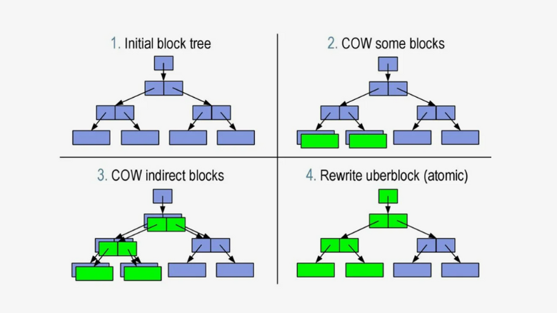
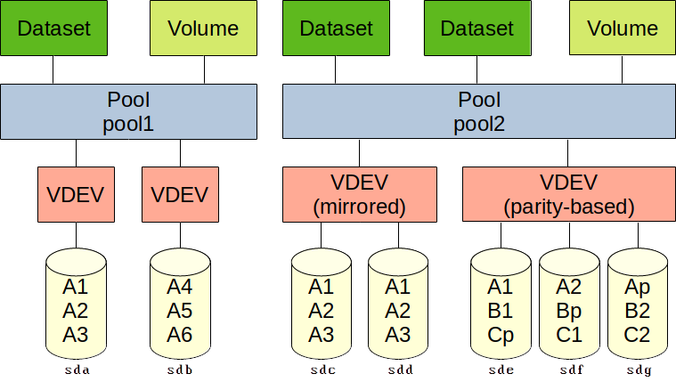

Цель лекции: Познакомиться с современными файловыми системами, использующими механизм copy-on-write (CoW), объяснить их преимущества перед классическими журналируемыми ФС, дать обзор архитектуры ZFS и BTRFS, их ключевых возможностей и областей применения.
Мы с вами уже изучили, как работают классические файловые системы (ext4, XFS, NTFS) с журналированием, научились создавать программные RAID и шифровать разделы с LUKS. Все эти технологии решают свои задачи: журналирование защищает метаданные, RAID обеспечивает отказоустойчивость, LUKS — конфиденциальность. Но они существуют как отдельные слои, и каждый требует настройки и обслуживания.
В середине 2000-х годов возникла идея объединить управление томами, RAID и файловую систему в единый стек, который бы также решал проблему «тихого повреждения данных» (silent data corruption). Так появились файловые системы нового поколения, основанные на принципе Copy-on-Write (CoW). Две самые известные из них — ZFS (разработана Sun Microsystems) и BTRFS (B-tree FS, разработана Oracle, но как открытый проект).
Сегодня мы разберём, что лежит в их основе, чем они отличаются от классических ФС и друг от друга, и где их имеет смысл применять.
На прошлом занятии мы уже обсуждали CoW в контексте отличия от журналирования. Давайте закрепим и углубим понимание, так как это сердце обеих ФС.

В классических ФС (ext4, XFS) при изменении данных они перезаписываются поверх старых. В CoW-системах данные никогда не перезаписываются на месте. Вместо этого:
Никаких «полузаписанных» данных: Мы никогда не находимся в состоянии, когда часть блока новая, а часть старая. Либо всё по-старому, либо всё по-новому.
В классическом подходе у нас есть отдельные слои:
Диски -> Аппаратный/программный RAID (mdadm) -> LVM (опционально) -> ФС
(ext4).
Каждый слой ничего не знает о соседях.
В CoW-системах (особенно в ZFS) этот стек объединён:
Это даёт огромную гибкость и возможность тонко настраивать политики хранения для каждого файла или каталога.
Жёсткие диски и даже SSD иногда могут незаметно искажать данные. Причины:
Классическая ФС не знает, что данные испортились, и отдаёт их приложению как есть. Контрольные суммы на уровне приложений (например, в базах данных) спасают, но не все файлы их имеют.
При записи данных:
При чтении:
Если данные повреждены, но у нас есть избыточность (зеркало или RAID с чётностью), система может:
Это и есть самоисцеление. Пользователь даже не узнает о проблеме, если она была исправлена.

ZFS была создана в Sun Microsystems для Solaris, затем портирована на FreeBSD и Linux (через OpenZFS). Сейчас OpenZFS — основной стандарт для Linux.
ZFS вводит свою иерархию объектов:
/dev/sdb)md (не рекомендуется)tank.tank/home,
tank/database. Каждая может
иметь свои параметры (сжатие, квоты,
снапшоты).В отличие от традиционного RAID, ZFS предлагает собственные схемы:
Особенности raidz:
Снапшоты в ZFS делаются мгновенно и практически не занимают места (только блоки, изменившиеся после создания снапшота). Клоны — это доступные для записи копии снапшотов, использующие те же блоки (CoW).
BTRFS (B-tree File System) разрабатывается с 2007 года как ответ на ZFS, но с фокусом на интеграцию в основное ядро Linux (в отличие от ZFS, которая долгое время была модулем с лицензионными проблемами).
BTRFS тоже CoW-система, но её архитектура отличается от ZFS.
@.BTRFS реализует RAID на уровне отдельных блоков данных (профили). Профиль задаётся отдельно для данных и для метаданных.
Как и ZFS, BTRFS хранит контрольные суммы для всех данных и метаданных. Если используется профиль с избыточностью (raid1, raid10, raid5/6), возможно самоисцеление при чтении.
duperemove, bedup), которые
сканируют файловую систему и объединяют экстенты с одинаковым содержимым после
записи (офлайн-дедупликация).BTRFS позволяет во время работы:
btrfs balance.BTRFS не требует LVM, так как сама умеет управлять томами. Но при желании можно разместить BTRFS поверх LVM или mdraid, хотя это лишает некоторых преимуществ (например, сквозного контроля целостности).
| Характеристика | ZFS (OpenZFS) | BTRFS |
|---|---|---|
| Происхождение | Sun Microsystems (Solaris) | Oracle (Linux) |
| Лицензия | CDDL (несовместима с GPL, поэтому модуль ядра отдельно) | GPL (входит в ядро Linux) |
| Стабильность и зрелость | Очень высокая. Используется в продакшене десятилетиями. | Средняя/высокая. Стабильна для базовых сценариев, RAID5/6 всё ещё под вопросом. |
| RAID-уровни | stripe, mirror, raidz1/2/3 (собственная реализация) | single, dup, raid0, raid1, raid10, raid5, raid6 (экспериментальные) |
| Управление пулом | zpool, очень строгая иерархия |
btrfs (более гибкое, но иногда запутанное) |
| Снапшоты | Мгновенные, эффективные | Мгновенные, эффективные |
| Сжатие | lz4, zstd, gzip и др. | lzo, zlib, zstd |
| Дедупликация | Встроенная, при записи (требует много RAM) | Внешняя (офлайн-утилиты) |
| Кэширование | ARC (RAM), L2ARC (SSD), SLOG (ZIL) | Нет встроенного кэша второго уровня, можно использовать bcache |
| Контрольные суммы | Да, на все данные и метаданные | Да, на все данные и метаданные |
| Самоисцеление | Да (при наличии избыточности) | Да (при наличии избыточности) |
| Расширение пула | Добавлением нового vdev (нельзя расширить raidz, только добавить ещё один raidz) | Можно добавлять/удалять устройства, менять профиль онлайн |
| Основное применение | Крупные хранилища, файловые серверы, NAS (FreeNAS/TrueNAS), корпоративный сектор | Десктопы, небольшие серверы, root-ФС в некоторых дистрибутивах (openSUSE, Fedora) |
Ключевые выводы:
Вопросы для самопроверки:
На следующих двух практических занятиях мы развернём ZFS и BTRFS на виртуальных машинах, создадим пулы, снапшоты, сломаем данные и восстановим их. Готовьтесь к экспериментам!
Напомним: RAID5 использует чередование данных с чётностью. При записи данных:
Классическая схема записи в RAID5:
Диск 1 Диск 2 Диск 3 Диск 4 (чётность) ┌─────┐ ┌─────┐ ┌─────┐ ┌─────┐ │ A1 │ │ A2 │ │ A3 │ │ Ap │ ← страйп A ├─────┤ ├─────┤ ├─────┤ ├─────┤ │ B1 │ │ B2 │ │ B3 │ │ Bp │ ← страйп B └─────┘ └─────┘ └─────┘ └─────┘
Представьте, что мы обновляем страйп B (данные B1, B2, B3 и чётность Bp). Процесс должен быть атомарным:
Проблема: Если питание отключается между шагами 4 и 5, возникает неконсистентное состояние:
Диск 1 Диск 2 Диск 3 Диск 4 ┌───────┐ ┌───────┐ ┌───────┐ ┌────────┐ │ A1 │ │ A2 │ │ A3 │ │ Ap │ ├───────┤ ├───────┤ ├───────┤ ├────────┤ │ B1' │ │ B2' │ │ B3' │ │ Bp │ ← СТАРАЯ чётность! │(НОВОЕ)│ │(НОВОЕ)│ │(НОВОЕ)│ │(СТАРАЯ)│ └───────┘ └───────┘ └───────┘ └────────┘
Результат:
Термин отражает тот факт, что в массиве появляется разрыв согласованности — «дыра», где данные и чётность не соответствуют друг другу. Массив не знает, что произошёл сбой, и продолжает работать, но при отказе диска восстановление даст неверные данные.
Аппаратные RAID-контроллеры и программный mdadm используют атомарные операции с помощью:
--consistency-policy=journal) используют
отдельный журнал для атомарного обновления.Но эти методы:
Не защищают от всех сценариев (например, сбой в момент перестройки массива).
ZFS, в отличие от традиционного RAID5, не страдает от write hole. Причины:
Схема работы ZFS RAID-Z (аналог RAID5):
Старый страйп (целый):
┌─────────────────────────────────────────────────┐
│ [Блок данных 1] [Блок данных 2] [Блок чётности] │
│ (указатели ссылаются сюда) │
└─────────────────────────────────────────────────┘
│
│ Запрос на изменение
▼
┌────────────────────────────────────────────────────┐
│ Запись новых данных в НОВЫЕ блоки │
│ [Блок данных 1'] [Блок данных 2'] [Блок чётности'] │
│ (старые блоки не трогаем!) │
└────────────────────────────────────────────────────┘
│
│ После успешной записи всех блоков
▼
┌─────────────────────────────────────────────┐
│ Атомарно обновляем указатели │
│ Теперь они ссылаются на НОВЫЙ страйп │
└─────────────────────────────────────────────┘
Если сбой происходит до обновления указателей — система просто продолжает использовать старый, неповреждённый страйп. Если после — все блоки нового страйпа уже записаны и согласованы.
| Традиционный RAID5 | ZFS RAID-Z | |
|---|---|---|
| Перезаписывает данные поверх старых | Использует Copy-on-Write | |
| При сбое между записью данных и чётности возникает write hole | При сбое старый страйп остаётся нетронутым | |
| Требует BBU или журнала для защиты | Защищён архитектурно, без дополнительных затрат | |
| При восстановлении после отказа диска может восстановить неверные данные | Контрольные суммы гарантируют целостность восстановленных данных |
Write hole — это фундаментальная проблема перезаписывающих RAID-систем, где данные и чётность могут разойтись при сбое питания. ZFS решает эту проблему на архитектурном уровне благодаря:
Это одно из ключевых преимуществ ZFS перед классическими RAID-решениями, особенно важное для систем, где целостность данных критична (базы данных, виртуализация, архивы).
В классических файловых системах (ext4, XFS) журнал защищает метаданные от повреждения при сбое. В ZFS с её CoW-архитектурой, казалось бы, журнал не нужен — ведь обновление указателей атомарно, и файловая система всегда остаётся в консистентном состоянии.
Но есть одна важная деталь: CoW гарантирует целостность файловой системы, но не гарантирует соблюдение требований приложений к синхронной записи.
| Характеристика | ZFS (OpenZFS) | BTRFS |
|---|---|---|
| Тип записи | Поведение | Примеры приложений |
| Асинхронная | Данные попадают в кэш, приложение получает подтверждение сразу. При сбое данные могут быть потеряны. | Копирование файлов, потоковое видео |
| Синхронная (O_SYNC, fsync, O_DIRECT) | Приложение требует, чтобы данные были физически записаны на диск перед подтверждением. | Базы данных (PostgreSQL, MySQL), NFS, виртуализация |
Проблема: В пуле ZFS данные не записываются на диск мгновенно. Они накапливаются в оперативной памяти (в ARC) и сбрасываются на диск транзакциями (transaction groups) раз в несколько секунд (обычно 5 секунд). Это отлично для асинхронной записи, но для синхронной — это неприемлемо.
ZIL — это журнал синхронных операций. Он работает так:
fsync в базе
данных).Важно: ZIL — это не замена основному хранилищу, а временный буфер для синхронных операций.
Если система падает между шагами 4 и 5 (после записи в ZIL, но до сброса на основное хранилище):
Если ZIL не было бы, синхронные записи пришлось бы ждать следующего сброса TXG (до 5 секунд), что неприемлемо для баз данных.
По умолчанию ZIL хранится внутри пула на тех же дисках, что и основные данные. Это означает, что:
Решение: SLOG — выделенное устройство (обычно быстрый SSD или NVMe), которое используется только для ZIL.
Почему это эффективно:
SLOG не требуется в следующих случаях:
fsync,
O_SYNC).async — но это рискованно).
┌─────────────────────────────────────────────────┐
│ ПРИЛОЖЕНИЕ │
│ (база данных, NFS, VM) │
└─────────────────────────┬───────────────────────┘
│
┌───────────────┴───────────────┐
│ │
▼ ▼
┌─────────────────┐ ┌─────────────────┐
│ АСИНХРОННАЯ │ │ СИНХРОННАЯ │
│ запись │ │ запись (fsync) │
└────────┬────────┘ └────────┬────────┘
│ │
▼ ▼
┌─────────────────┐ ┌─────────────────┐
│ ARC │ │ ZIL │
│ (кэш в RAM) │◄────────────┤ (журнал на │
│ │ │ SLOG/дисках) │
└────────┬────────┘ └────────┬────────┘
│ │
└───────────────┬───────────────┘
│
▼
┌─────────────────────────────┐
│ TXG (Transaction Group) │
│ сброс на диск каждые 5 сек│
└─────────────┬───────────────┘
│
▼
┌─────────────────────────────┐
│ Основное хранилище │
│ (диски пула, vdev) │
└─────────────────────────────┘
BTRFS имеет аналогичный механизм — журнал (log tree), который работает по схожему принципу. Однако BTRFS не имеет возможности выделить отдельное устройство для журнала (аналог SLOG). Это одна из причин, почему в высоконагруженных средах с синхронными операциями ZFS часто предпочитают BTRFS.
Разве CoW не гарантирует атомарность? Гарантирует целостность файловой системы, но не гарантирует немедленную фиксацию синхронных операций.
Что такое ZIL? Журнал синхронных операций, который позволяет подтверждать синхронные записи мгновенно, не дожидаясь сброса TXG.
Зачем нужен SLOG? Отдельное быстрое устройство для ZIL, чтобы не нагружать основные диски синхронными операциями.
Когда ZIL не нужен? Если все приложения работают в асинхронном режиме или пул построен на быстрых NVMe.